Jason K. Moore and Mont Hubbard
University of California, Davis
November 11, 2013
Sometimes
Torque/forces between the vehicle rigid bodies and/or ground, e.g. steer torque, ground reaction forces
External torques and forces, e.g. gust of wind
Functions of the vehicle states and inputs, e.g. steer angle
Probably never
Torque/forces between the vehicle and rider rigid bodies and/or ground, e.g. Muscle forces (or joint torques), ground reaction forces
External torques and forces, e.g gust of wind
Functions of the vehicle and rider states and inputs, e.g. elbow flexion
Rice, Roland, Manning, Lunch, Kunkel, Milliken, Davis, Cassidy; 1970-176
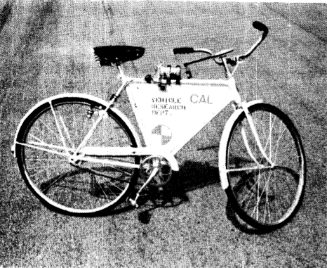Eaton, D. J.; 1973
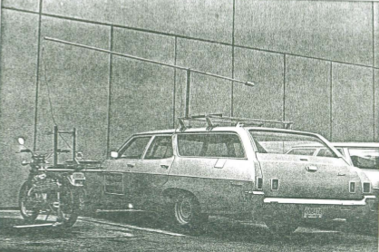Kooijman, J. D. G; 2007/8/9
| 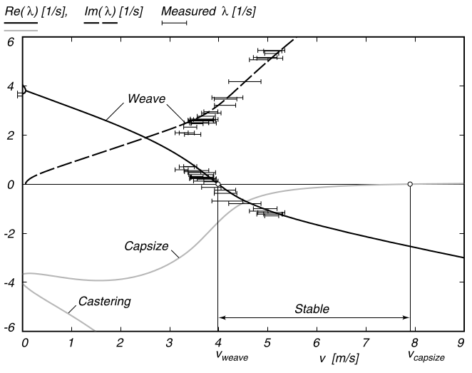 | 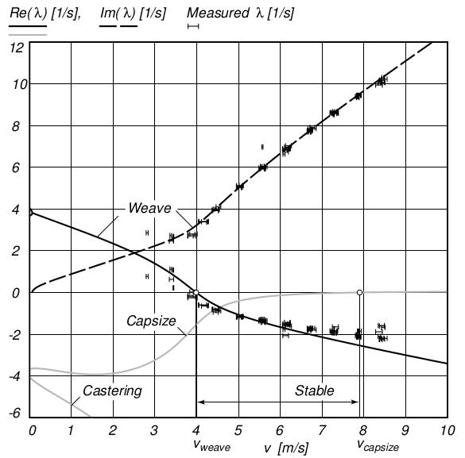 |
Rice, Roland, Manning, Lunch, Kunkel, Milliken, Davis, Cassidy; 1970-76
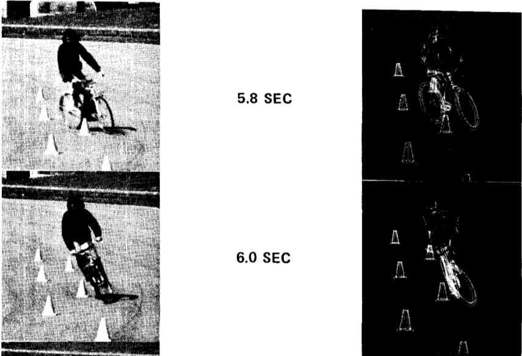James, S. R..; 2002
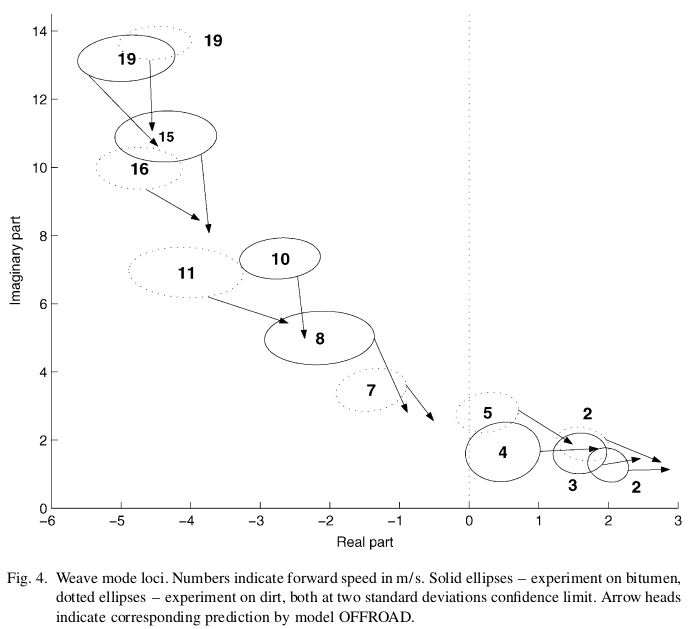Biral, F., Bortoluzzi, D., Cossalter, V., and Lio, M.; 2003
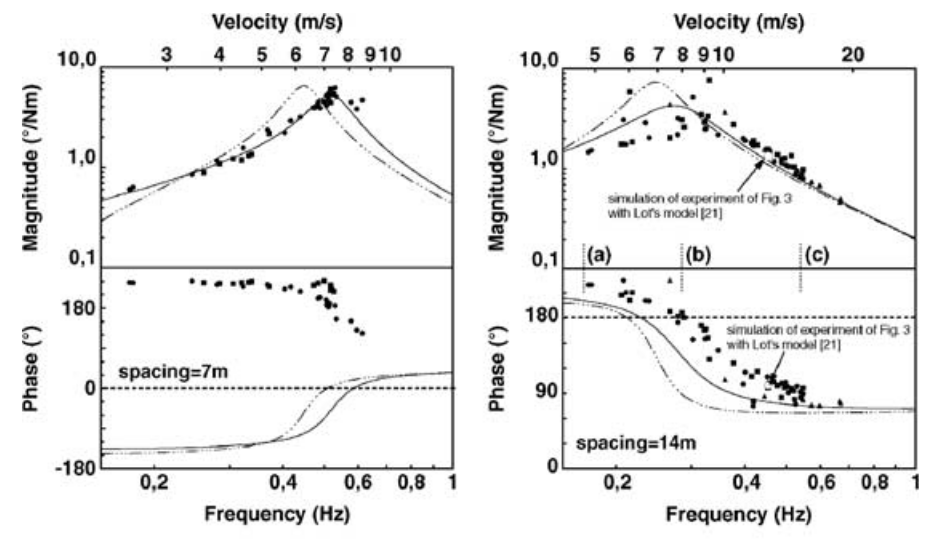Cain, S. M. and Perkins, N. C.; 2012
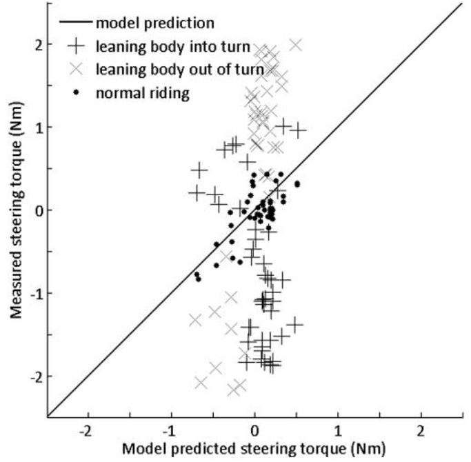Some are questionable, some have decent results.
Bicycle validation is very weak.
Comprehenisve data at many speeds and input frequencies is missing.
From first principlesWhipple model Whipple model + arm inertial effects Both linearized about the nominal configuration
Identified4th order grey box model based on the Whipple model |
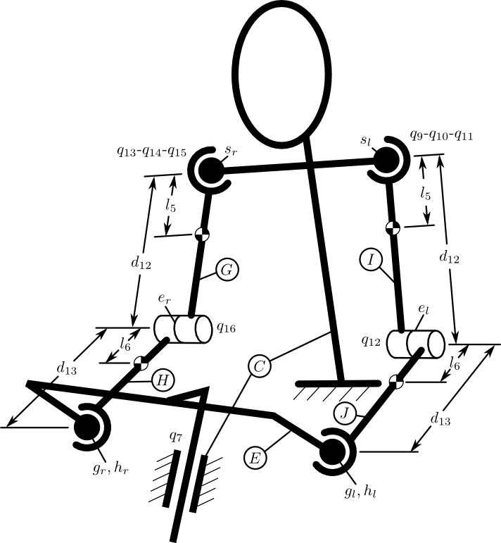 |
| 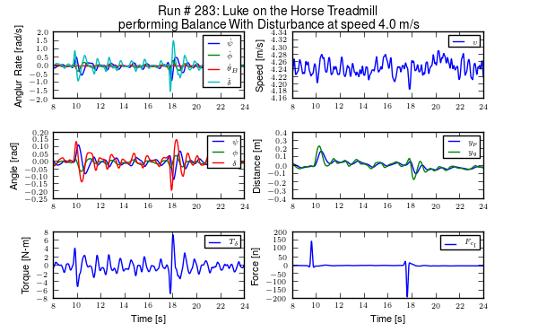 | 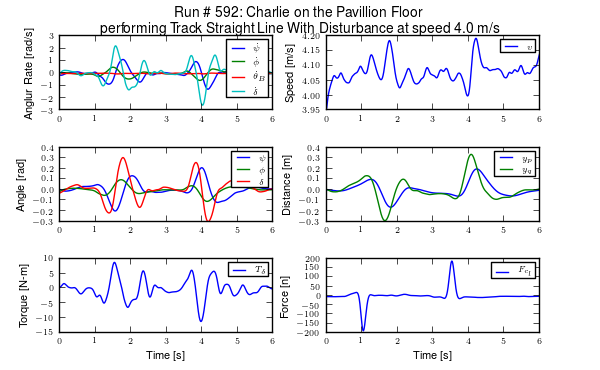 |
~1.7 million time samples from each of about 30 sensors sampled at 200 hertz (about 2.4 hours of real time)
Canonical linear form of the Whipple bicycle model:
$$ \mathbf{M} \ddot{q}(t) + v \mathbf{C}_1 \dot{q}(t) + [g \mathbf{K}_0 + v^2 \mathbf{K}_2] q(t) = T(t) + H F(t) $$
Coordinates: $$q(t) = [\phi(t) \quad \delta(t)]^T$$ Torques: $$T(t) = [0 \quad T_\delta(t)]^T$$ Lateral Force: $$F(t)$$
Measured time varying values: $$q(t), \dot{q}(t), v(t), T(t), F(t)$$ Estimated (numerical differentiation and filtering): $$\ddot{q}(t)$$ Measured constants:
| $$ \mathbf{M} = \begin{bmatrix} \underline{M_{\phi\phi}} & M_{\phi\delta} \\ M_{\delta\phi} & M_{\delta\delta} \end{bmatrix} $$ | $$ \mathbf{C}_1 = \begin{bmatrix} 0 & C_{1\phi\delta} \\ C_{1\delta\phi} & C_{1\delta\delta} \\ \end{bmatrix} $$ | $$ \mathbf{K}_0 = \begin{bmatrix} \underline{K_{0\phi\phi}} & K_{0\phi\delta} \\ K_{0\delta\phi} & K_{0\delta\delta} \end{bmatrix} $$ |
| $$ \mathbf{K}_2 = \begin{bmatrix} 0 & K_{2\phi\delta} \\ 0 & K_{2\delta\delta} \end{bmatrix} $$ | $$ H = \begin{bmatrix} \underline{H_{\phi F}} \\ H_{\delta F} \end{bmatrix} $$ | $$\underline{g}$$ |
$$ \mathbf{\Gamma}_{\phi} \Theta_{\phi} = Y_{\phi}, \quad \mathbf{\Gamma}_{\delta} \Theta_{\delta} = Y_{\delta} $$
$$ \hat{\Theta}_{\phi,\delta} = [\mathbf{\Gamma}_{\phi,\delta}^T \mathbf{\Gamma}_{\phi,\delta}]^{-1} \mathbf{\Gamma}_{\phi,\delta}^T Y_{\phi,\delta} $$
$$ \textrm{VAF}_{\phi,\delta} = 1 - \frac{\vert \vert \mathbf{\Gamma}_{\phi,\delta}\hat{\Theta}_{\phi,\delta} - Y_{\phi,\delta} \vert \vert} {\vert \vert Y_{\phi,\delta} - \bar{Y}_{\phi,\delta} \vert \vert} $$
$$ \small{ \begin{align} &\begin{bmatrix} \ddot{\delta}(1) & v(1) \dot{\delta}(1) & g \delta(1) \\ \vdots & \vdots & \vdots\\ \ddot{\delta}(N) & v(N) \dot{\delta}(N) & g \delta(N) \\ \end{bmatrix} \begin{bmatrix} M_{\phi\delta} \\ C_{1\phi\delta} \\ K_{0\phi\delta} \end{bmatrix}\\ &= \begin{bmatrix} H_{\phi F} F(1) - M_{\phi\phi} \ddot{\phi}(1) - C_{1\phi\phi} v(1) \dot{\phi}(1) - K_{0\phi\phi} g \phi(1) - K_{2\phi\phi} v(1)^2 \phi(1) - K_{2\phi\delta} v(1)^2 \delta(1) \\ \vdots\\ H_{\phi F} F(N) - M_{\phi\phi} \ddot{\phi}(N) - C_{1\phi\phi} v(N) \dot{\phi}(N) - K_{0\phi\phi} g \phi(N) - K_{2\phi\phi} v(N)^2 \phi(N) - K_{2\phi\delta} v(N)^2 \delta(N) \\ \end{bmatrix} \nonumber \end{align} } $$
/
#